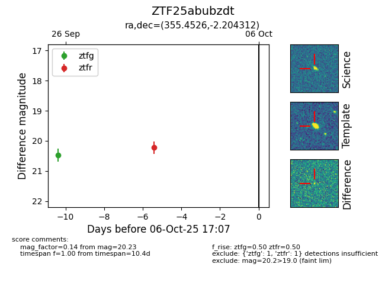

FINK: ZTF25abubzdt
Lasair: ZTF25abubzdt
ALeRCE: ZTF25abubzdt
ZTF25abubzdt (ztf,fink)
equatorial (ra, dec) = (355.4526,-2.20431)
galactic (l, b) = (86.1976,-60.01323)

last ztfg=20.48, ztfr=20.23
1 ztfg, 1 ztfr detections